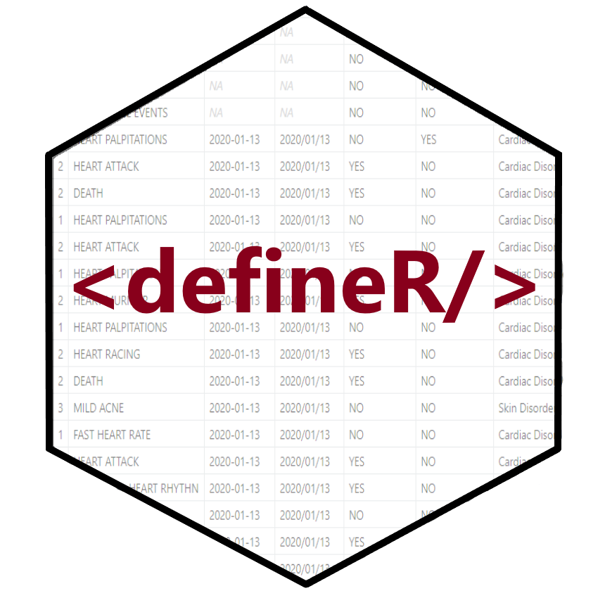

The defineR package is an open-source R language package to create define.xml documents that are suitable for submission to the U.S. Food and Drug Administration. The package has the following capabilities:
Currently, the package only supports version 2.0.0 of the define.xml, which is the version preferred by the FDA. Future versions of the package will support version 2.1.
Installation
The easiest way to install the defineR package is to run the following command from your R console:
install.packages("defineR")Then put the following line at the top of your script:
library(defineR)For examples and usage information, please visit the defineR documentation site here
Getting Help
If you need help, the first place to turn to is the defineR web site.
If you want to look at the code for the defineR package, visit the github page here.
If you encounter a bug or have a feature request, please submit an issue here.
See Also
The defineR package is associated with the sassy meta-package, and utilizes many of the packages from that system. The sassy meta-package includes several packages that help make R easier. You can read more about the sassy packages here.